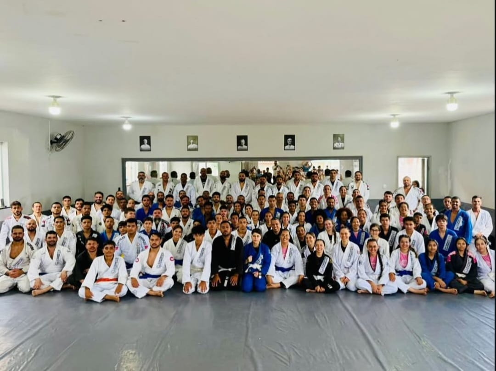
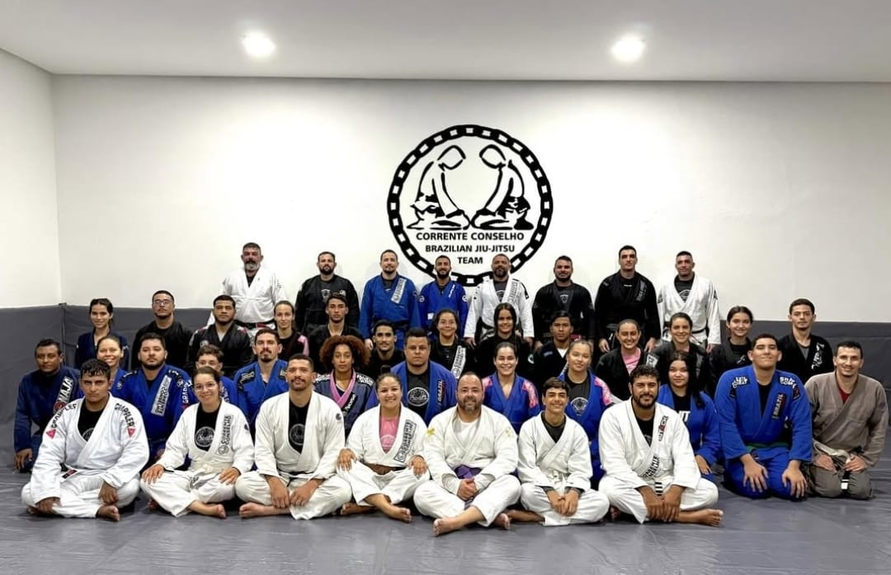

Euclides da Cunha - BA
Localização: R. Roberto Santos, 32 - Centro
Ver no Google Maps
Turmas Completas
Área de Competição
Ambiente Seguro

Turmas e Horários
Turma Adulto
Iniciante ao Avançado
Segunda
20:00 - 21:30
Terça
20:00 - 21:30
Quarta
20:00 - 21:30
Quinta
20:00 - 21:30
Sexta
20:00 - 21:30
Aulas técnicas, sparring e condicionamento
Turma Kids (5-12 anos)
Formação e DiversãoMetodologia lúdica e educativa
Foco em disciplina e respeito
Sistema de faixas coloridas
Próxima Unidade
Monte Santo - BA
Localização: Centro, Atrás da Igreza Matriz, Próximo à praça
Ver no Google Maps
Comunidade Ativa
Campeões Locais
Ambiente Familiar

Turmas e Horários
Turma Adulto
Misto - Todos os níveis
Terça
20:00 - 21:50
Quinta
20:00 - 21:50
Foco em fundamentos e técnica
Próxima Unidade
Cansanção - BA
Localização: R. Manoel Santana Próximo ao Posto Elohim
Ver no Google Maps
Infraestrutura Completa
Horários Flexíveis
Professores Qualificados

Turmas e Horários
Turma Adulto
Iniciantes e Intermediários
Segunda
19:30 - 21:00
Terça
19:30 - 21:00
Quarta
19:30 - 21:00
Quinta
19:30 - 21:00
Progressão técnica monitorada
Grupos por nível de experiência
Turma Kids
Metodologia especial para crianças pequenas
Exercícios lúdicos e jogos educativos
Desenvolvimento social e emocional
Ainda tem dúvidas sobre qual unidade escolher?
Fale diretamente com nossa equipe e agende uma aula experimental na unidade de sua preferência.